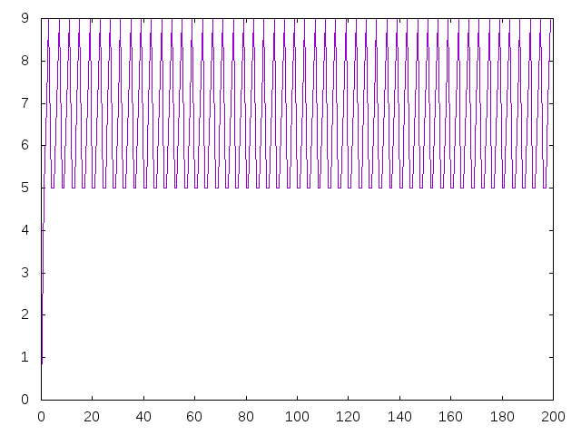

Números cíclopes
Un número cíclope es un número natural cuya representación binaria sólo tiene un cero en el centro. Por ejemplo,
0 es ciclope porque su representación binaria es 0 1 no es ciclope porque su representación binaria es 1 5 es ciclope porque su representación binaria es 101 9 no es ciclope porque su representación binaria es 1001 10 no es ciclope porque su representación binaria es 1010 27 es ciclope porque su representación binaria es 11011 85 no es ciclope porque su representación binaria es 1010101 101 no es ciclope porque su representación binaria es 1100101 111 no es ciclope porque su representación binaria es 1101111 119 es ciclope porque su representación binaria es 1110111
Definir las funciones
esCiclope :: Integer -> Bool ciclopes :: [Integer] graficaCiclopes :: Int -> IO ()
tales que
- (esCiclope n) se verifica si el número natual n es cíclope. Por ejemplo,
esCiclope 0 == True esCiclope 1 == False esCiclope 5 == True esCiclope 9 == False esCiclope 10 == False esCiclope 27 == True esCiclope 85 == False esCiclope 101 == False esCiclope 111 == False esCiclope 119 == True
- ciclopes es la lista de los número cíclopes. Por ejemplo,
λ> take 12 ciclopes [0,5,27,119,495,2015,8127,32639,130815,523775,2096127,8386559] λ> length (show (ciclopes !! (10^5))) 60207
- (graficaCiclopes n) dibuja la gráfica del último dígito de los n primeros números cíclopes. Por ejemplo, (graficaCiclopes n) dibuja

Soluciones
import Graphics.Gnuplot.Simple -- 1ª solución -- =========== -- esCiclope 5 == True -- esCiclope 6 == False esCiclope :: Integer -> Bool esCiclope n = esCiclopeBinario (decimalAbinario n) -- decimalAbinario 4 == [0,0,1] -- decimalAbinario 5 == [1,0,1] -- decimalAbinario 6 == [0,1,1] decimalAbinario :: Integer -> [Integer] decimalAbinario 0 = [0] decimalAbinario 1 = [1] decimalAbinario n = r : decimalAbinario q where (q,r) = quotRem n 2 -- esCiclopeBinario [1,1,0,1,1] == True -- esCiclopeBinario [1,1,0,1] == False -- esCiclopeBinario [1,1,2,1,1] == False -- esCiclopeBinario [2,2,0,2,2] == False esCiclopeBinario :: [Integer] -> Bool esCiclopeBinario xs = odd n && xs == ys ++ 0 : ys where n = length xs m = n `div` 2 ys = replicate m 1 -- take 8 ciclopes == [0,5,27,119,495,2015,8127,32639] ciclopes :: [Integer] ciclopes = filter esCiclope [0..] -- 2ª solución -- =========== -- take 8 ciclopes2 == [0,5,27,119,495,2015,8127,32639] ciclopes2 :: [Integer] ciclopes2 = [binarioAdecimal (replicate n 1 ++ 0 : replicate n 1) | n <- [0..]] -- binarioAdecimal [0,1,1] == 6 binarioAdecimal :: [Integer] -> Integer binarioAdecimal [x] = x binarioAdecimal (x:xs) = x + 2 * binarioAdecimal xs esCiclope2 :: Integer -> Bool esCiclope2 n = n `pertenece` ciclopes2 pertenece :: Integer -> [Integer] -> Bool pertenece x ys = x == head (dropWhile (<x) ys) -- 3ª solución -- =========== -- take 8 ciclopes3 == [0,5,27,119,495,2015,8127,32639] ciclopes3 :: [Integer] ciclopes3 = [sum [2^k | k <- [0..n-1]] + sum [2^k | k <- [n+1..n+n]] | n <- [0..]] esCiclope3 :: Integer -> Bool esCiclope3 n = n `pertenece` ciclopes3 -- 4ª solución -- =========== -- take 8 ciclopes3 == [0,5,27,119,495,2015,8127,32639] ciclopes4 :: [Integer] ciclopes4 = [2^(2*n+1) - 1 - 2^n | n <- [0..]] esCiclope4 :: Integer -> Bool esCiclope4 n = n `pertenece` ciclopes4 -- 5ª solución -- =========== -- take 8 ciclopes5 == [0,5,27,119,495,2015,8127,32639] ciclopes5 :: [Integer] ciclopes5 = [2*4^n - 1 - 2^n | n <- [0..]] esCiclope5 :: Integer -> Bool esCiclope5 n = n `pertenece` ciclopes5 -- 6ª solución -- =========== -- take 8 ciclopes6 == [0,5,27,119,495,2015,8127,32639] ciclopes6 :: [Integer] ciclopes6 = [2*x*x - 1 - x | x <- iterate (*2) 1] esCiclope6 :: Integer -> Bool esCiclope6 n = n `pertenece` ciclopes6 -- Comparación de eficiencia -- ========================= -- λ> ciclopes !! 9 -- 523775 -- (6.68 secs, 4,696,734,960 bytes) -- λ> ciclopes2 !! 9 -- 523775 -- (0.00 secs, 134,664 bytes) -- λ> ciclopes3 !! 9 -- 523775 -- (0.00 secs, 150,920 bytes) -- λ> ciclopes4 !! 9 -- 523775 -- (0.01 secs, 131,936 bytes) -- λ> ciclopes5 !! 9 -- 523775 -- (0.00 secs, 132,064 bytes) -- -- λ> length (show (ciclopes2 !! (3*10^4))) -- 18063 -- (0.65 secs, 486,437,480 bytes) -- λ> length (show (ciclopes3 !! (3*10^4))) -- 18063 -- (2.94 secs, 1,188,645,584 bytes) -- λ> length (show (ciclopes4 !! (3*10^4))) -- 18063 -- (0.02 secs, 6,769,592 bytes) -- λ> length (show (ciclopes5 !! (3*10^4))) -- 18063 -- (0.02 secs, 6,773,552 bytes) -- -- λ> length (show (ciclopes2 !! (10^5))) -- 60207 -- (6.42 secs, 5,148,671,368 bytes) -- λ> length (show (ciclopes4 !! (10^5))) -- 60207 -- (0.07 secs, 22,291,480 bytes) -- λ> length (show (ciclopes5 !! (10^5))) -- 60207 -- (0.04 secs, 22,316,216 bytes) -- -- λ> length (show (ciclopes4 !! (5*10^6))) -- 3010301 -- (2.34 secs, 1,116,327,832 bytes) -- λ> length (show (ciclopes5 !! (5*10^6))) -- 3010301 -- (2.39 secs, 1,099,177,056 bytes) -- Definición de graficaCiclopes -- ============================= graficaCiclopes :: Int -> IO () graficaCiclopes n = plotList [ Key Nothing -- , PNG "Numeros_ciclopes.png" ] [x `mod` 10 | x <- take n ciclopes5]